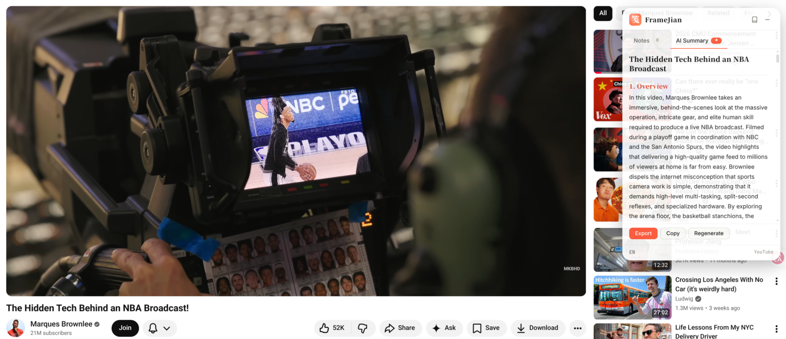
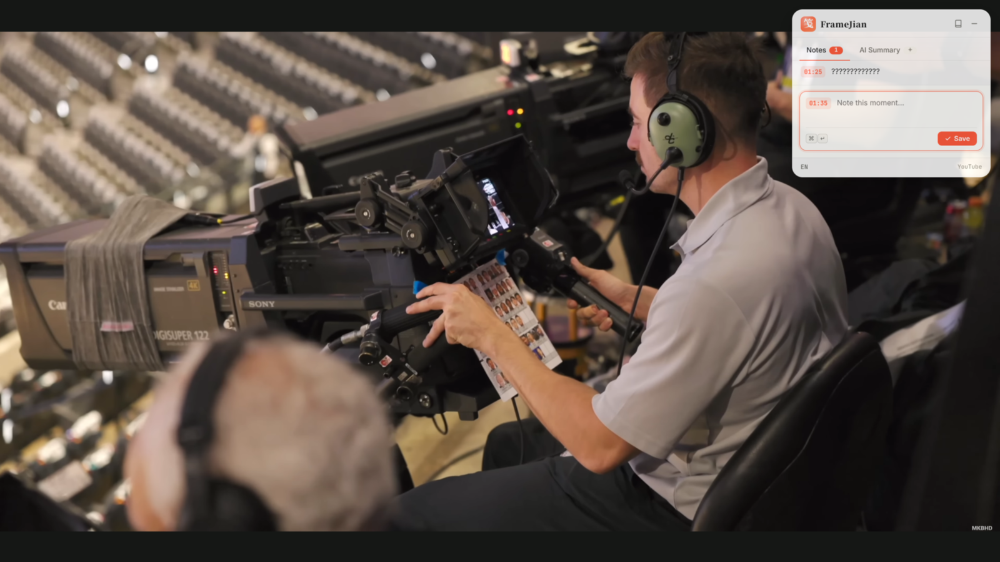
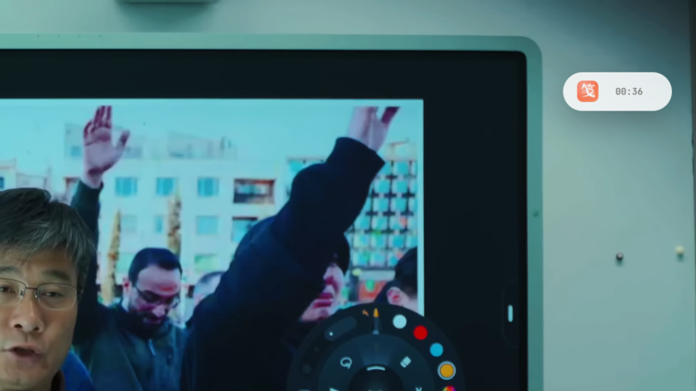
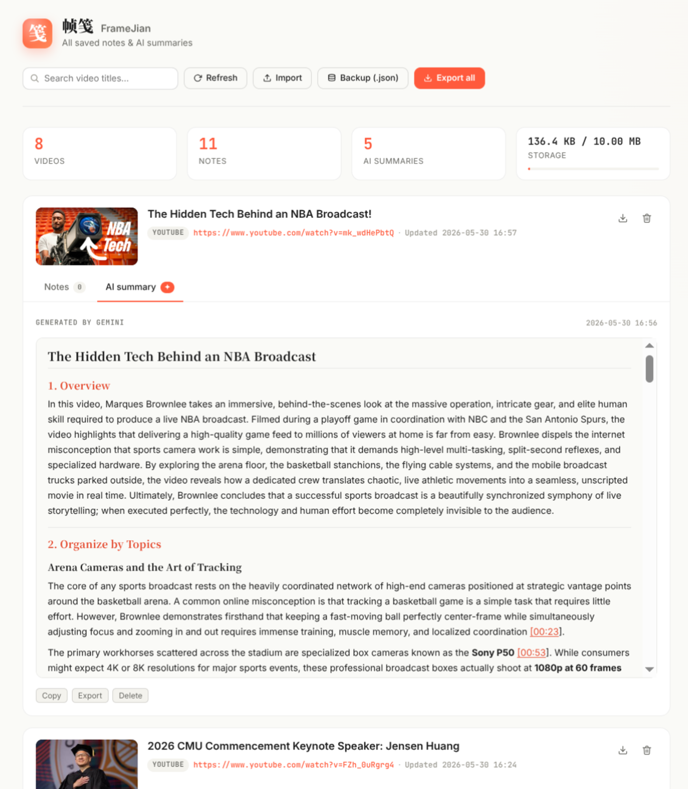

01
随帧落笺
Notes anchored to frames
看到值得记的一瞬，⌘ ↵ 一下，时间戳与文字同时落地。回头点一下时间戳，视频跳回那一帧。
Press ⌘ ↵ and the moment is yours — text and timestamp captured together. Click any timestamp to seek the video back to that frame.
边看边笺，随帧成记
Annotate the frames you watch.
「帧」是光阴一瞥，「笺」是心迹一痕。
古人于书页留笺，今人于光影成笺。
A frame is a glimpse of time.
A 笺 (jiān) is the slip of paper a reader once used to annotate the books they loved.
FrameJian brings that quiet practice — marginalia — to every video you watch.

看到值得记的一瞬，⌘ ↵ 一下，时间戳与文字同时落地。回头点一下时间戳，视频跳回那一帧。
Press ⌘ ↵ and the moment is yours — text and timestamp captured together. Click any timestamp to seek the video back to that frame.
借你浏览器里登录好的 Gemini 会话，把整段视频化作带 [MM:SS] 时间戳跳转的结构化文章，流式渲染。
FrameJian rides your existing Gemini session and streams a structured article with clickable [MM:SS] markers — markdown rendered in place.
全屏时仍在最上层，闲置时降到极淡。一键收成胶囊，只剩 logo 与当下时间。
It floats above the player — even in fullscreen — fades when idle, and collapses to a corner pill showing just the logo and the current timestamp.
所有笔记与摘要随视频本地存储，可搜索、可导出 Markdown、可 JSON 备份与还原。无服务器，无账号。
Notes and summaries live on your machine, per video. Search across everything, export to Markdown, or back up the lot as JSON. No server, no account.



git clone git@github.com:jonlai211/FrameJian.git
浏览器地址栏访问 chrome://extensions，右上角打开 开发者模式。
Visit chrome://extensions and toggle Developer mode on.
点击 加载已解压的扩展程序，选中刚才克隆的项目目录。
Click Load unpacked and select the folder you just cloned.
想使用 AI 摘要？请先在同一浏览器配置里登录 gemini.google.com — 帧笺不持有任何 API key，全程借你已登录的会话。
To use the AI summary, sign in to gemini.google.com in the same browser profile. FrameJian never holds an API key — it borrows your existing session.